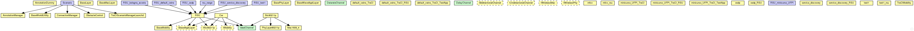

This documentation is released under the Creative Commons license
This documentation is released under the Creative Commons licenseThe following diagram shows usage relationships between simple and compound modules, module interfaces, networks, channels and channel interfaces. Unresolved types are missing from the diagram.
 This documentation is released under the Creative Commons license